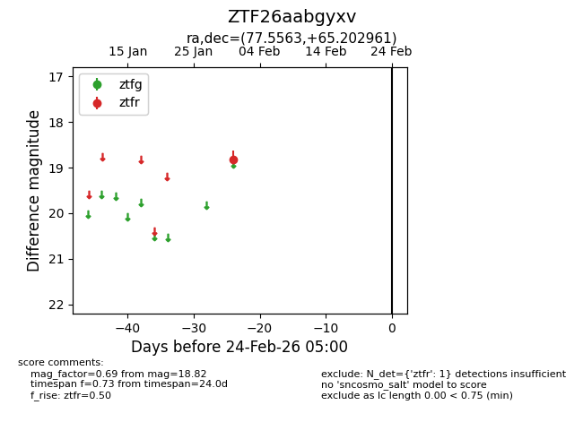
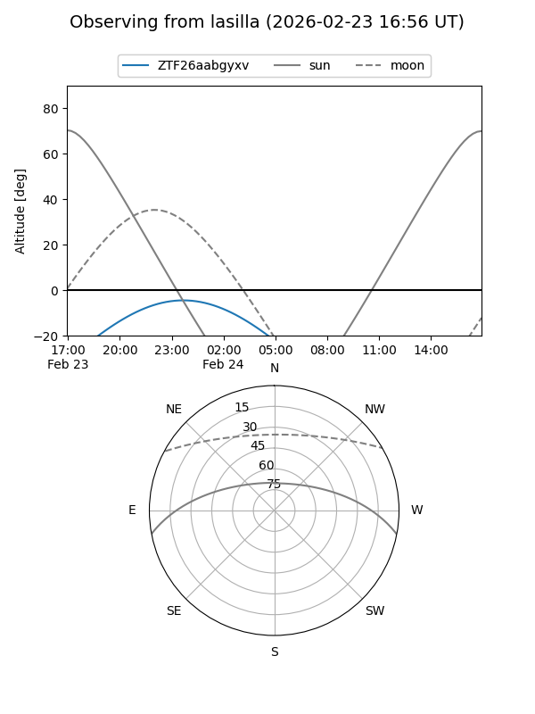
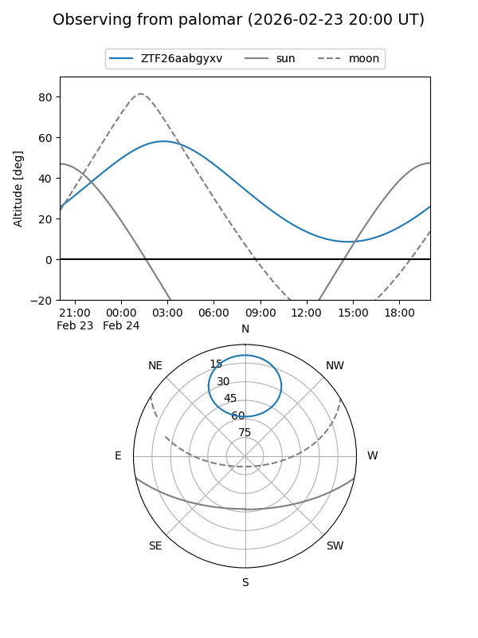

ZTF26aabgyxv
Target ZTF26aabgyxv at 2026-02-24 09:08
Aliases and brokers:
FINK: link
Lasair: link
ALeRCE: link
alt names
ZTF26aabgyxv (ztf,fink_ztf)
Coordinates:
equatorial (ra, dec) = 77.5563,+65.20296
equatorial (HMS+DMS) = 05:10:13.51,+65:12:10.66
galactic (l, b) = (146.0151,+14.73833)
Flags:
Photometry:
last ztfr=18.82
1 ztfr detections
Lightcurve

Visibility


Additional plots